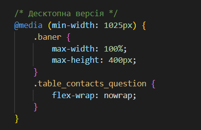
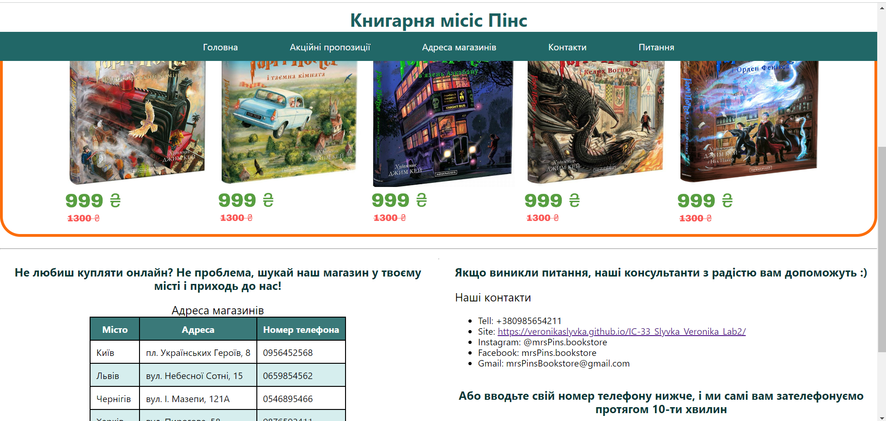

Пояснення
Медіа-запит для широких екранів (комп'ютери, ноутбуки) активується, коли ширина екрана більша за 1024px. Банер: зображення банера має максимальну висоту 400px, щоб виглядати більше на великих екранах. Блок контактів та питань: елементи в цьому блоці відображаються в одному рядку за рахунок властивості flex-wrap: nowrap;, що робить їх компактнішими і підходить для великих екранів.

